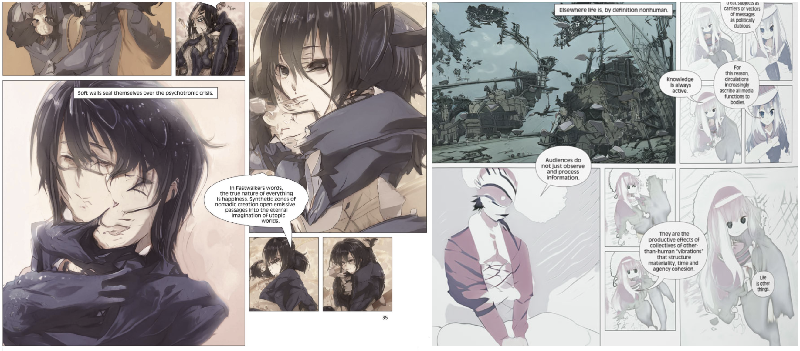
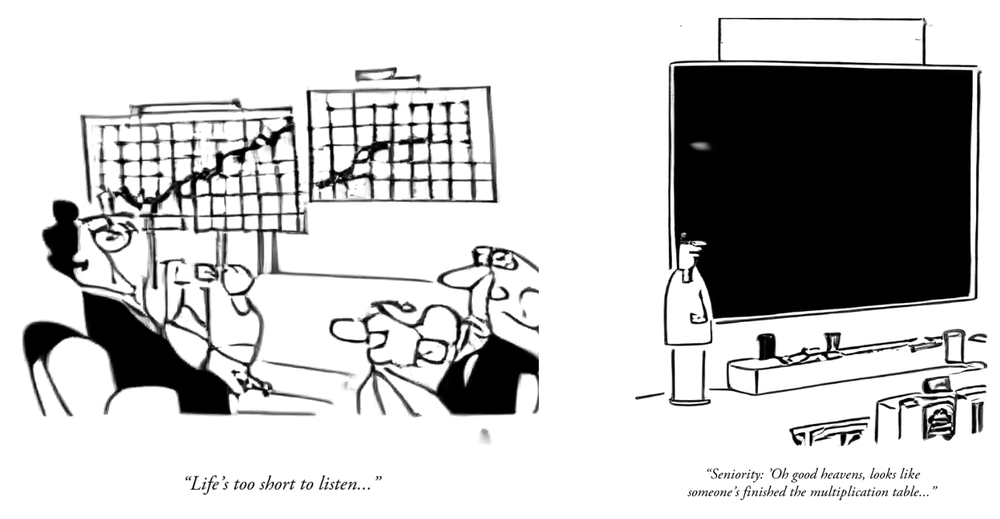
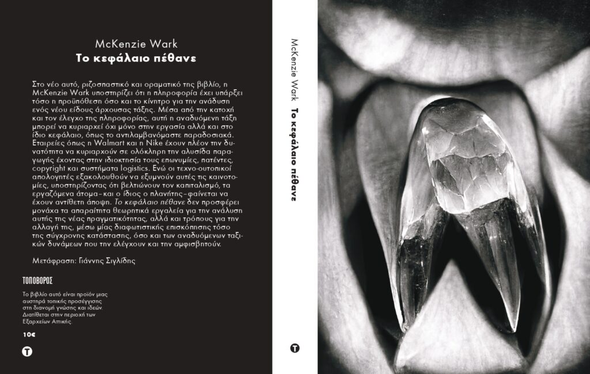

(2025) Antikythera, MIT Press.

-
Generative Topolinguistics (p. 119)
Expanding my previous idea of Latent Reading to a whole infrastructure. -
The Chronoceptual Governor (p. 146)
Reframing technology as the main mediator of an ecology of timescales.
(2022) Fastwalkers, Ilan Manouach.

The first synthetic comic book co-created with emerging AI, a nonlinear meditation on deep learning that
celebrates the unexpected poetics of generative computing and explores its potential to form new reader sensibilities. It is the outcome of more than a 2-year research effort of trying to create a manga comic driven by the excitement and resources of an early stage of generative modelling, that at that time didn't meet the industrial needs of high-fidelity reconstruction and compositional generalization. A true futurist piece of work that both captures and invents a whole micro-style of imagery, from and as an implemented extra-human metaphor of Manga as big-data. As rare as a picture of a falling star, like certain websites of Web 1.0 it is an essential piece of avant-garde artistry.
celebrates the unexpected poetics of generative computing and explores its potential to form new reader sensibilities. It is the outcome of more than a 2-year research effort of trying to create a manga comic driven by the excitement and resources of an early stage of generative modelling, that at that time didn't meet the industrial needs of high-fidelity reconstruction and compositional generalization. A true futurist piece of work that both captures and invents a whole micro-style of imagery, from and as an implemented extra-human metaphor of Manga as big-data. As rare as a picture of a falling star, like certain websites of Web 1.0 it is an essential piece of avant-garde artistry.
(2020 - 2023) The Neural Yorker

Synthetic Cartoons in the style of New Yorker on Twitter (~2K followers).
Press: Hyperallergic (2021), iMedd (2025)
(2022) Translation of Capital is Dead from McKenzie Wark, in greek.

A long interview I took from McKenzie Wark about the book in english and in greek.
A single conceptual podcast where I read excerpts in the voice of an AI hybrid of me and McKenzie Wark.
A single conceptual podcast where I read excerpts in the voice of an AI hybrid of me and McKenzie Wark.
(2021) Latent Reading @ Chimeras: Inventory of Synthetic Cognition

Different from "Close Reading" that focuses on the close study of the artifacts of a certain cultural entity and "Distant Reading" that applies computational methods to them by treating them as big-data and extracts high level statistical conclusions and avoids a close qualitative analysis, Latent Reading speculates that to understand such an entity it may be meaningful to do instead a close-reading of the outputs of a generative model trained on its big-data.